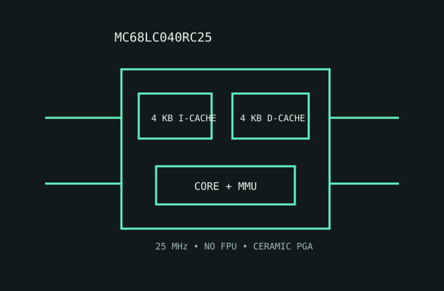

[ MOTOROLA 68000 FAMILY // LOW-COST 68040 ]
Motorola MC68LC040RC25
This 25 MHz low-cost 68040 variant keeps the integrated MMU and caches while omitting the floating-point unit.

MODEL IDENTIFICATION: MC68LC040RC25; 25 MHz LC040 in ceramic PGA. The LC prefix identifies an omitted FPU; verify the exact mask revision and errata.
Recorded specifications
| Model | MC68LC040RC25. |
|---|---|
| Generation | Fourth-generation Motorola 68000 family (68040 generation), 1990s part. |
| Architecture / cores | Motorola 68040 CISC architecture; one 32-bit CPU core with integrated MMU; no FPU in this LC variant. |
| Frequency / cache | 25 MHz speed grade; 4 KB instruction cache and 4 KB data cache. |
| Package / socket | RC ceramic PGA; requires a matching 68040-compatible PGA footprint/socket and board pin map. |
| Power | 5 V nominal supply. No modern TDP designation; use the LC040 data sheet's maximum current/dissipation and provide package cooling accordingly. |
| Memory / bus | 32-bit external data/address paths; integrated MMU, caches and bus interface connect to board-level memory controller and DRAM. |
| Board compatibility | Requires an MC68LC040-aware board with 5 V supply, correct PGA pinout and 25 MHz timing. Software needing hardware floating point needs a software/emulation strategy or a different CPU. |
Compatibility notes
- Do not treat LC040 and full MC68040 as functionally identical: floating-point instructions are not executed by an LC040 FPU.
- Check board revision and CPU errata/mask compatibility, plus cooling and power limits.
- Verify the package marking rather than relying on a board label that says only “68040.”
Sources & further reading
- Motorola MC68LC040 Preliminary Technical Summary (Bitsavers)Manufacturer summary archive for LC040 features, limits and package details.
- Motorola MC68040 User's Manual (Bitsavers technical archive)Manufacturer system manual archive for 68040 architecture, cache/MMU and bus behavior.